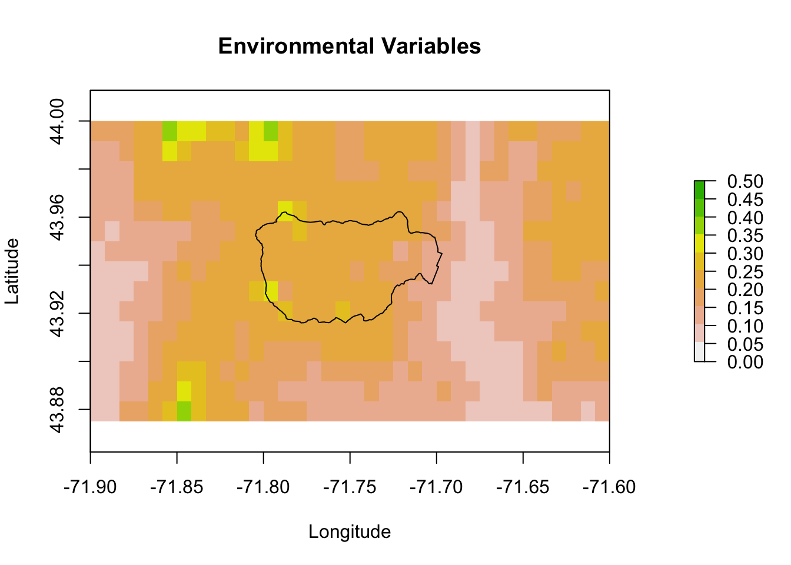
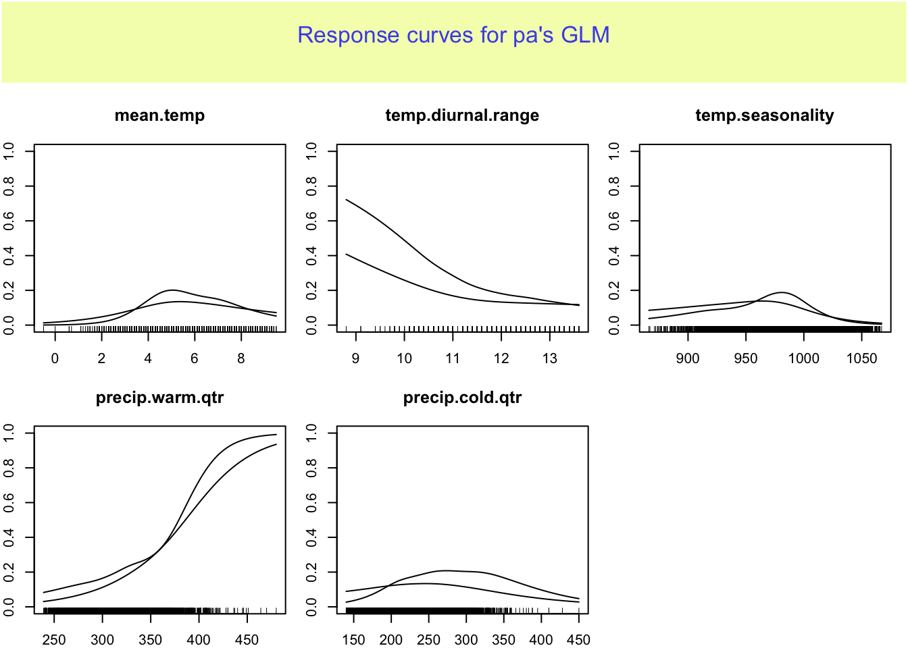
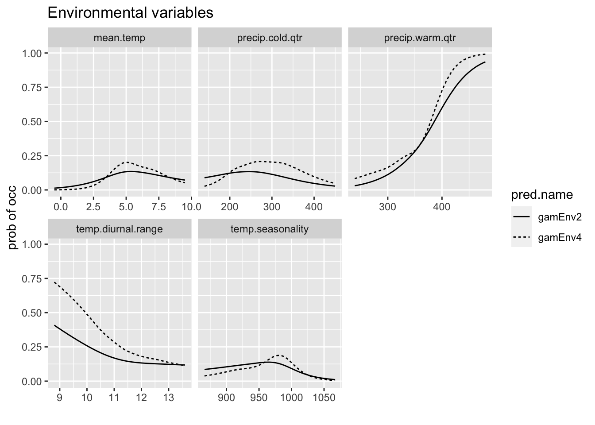
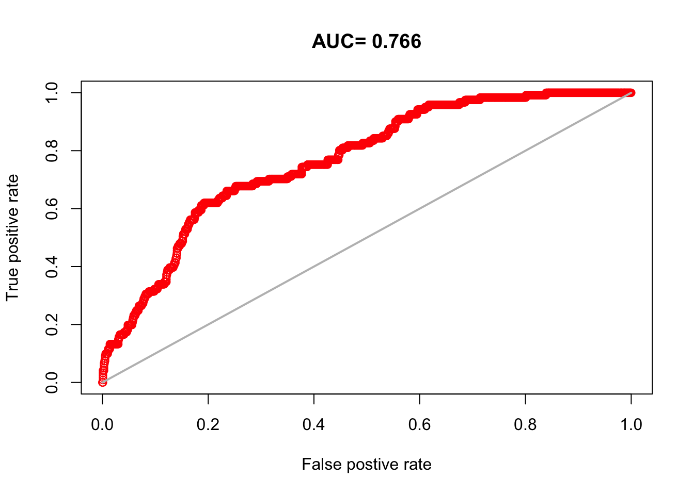
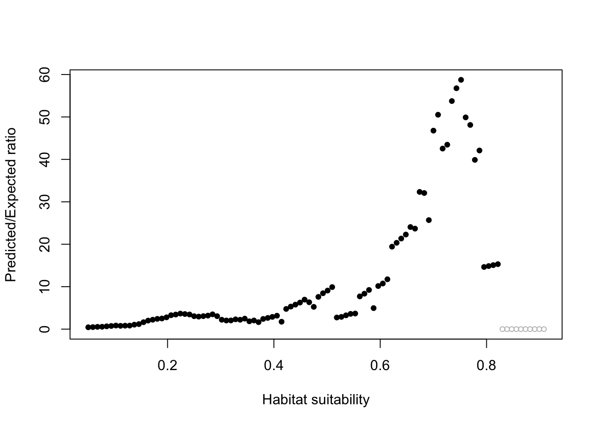
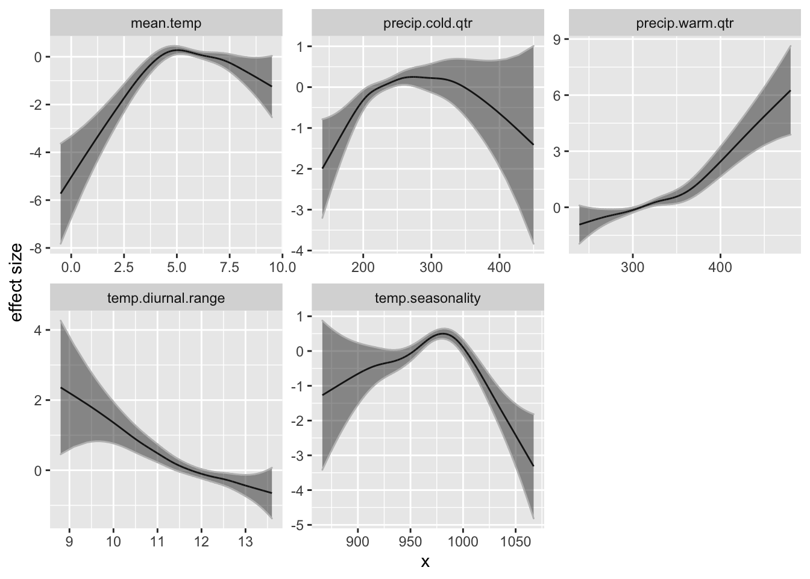
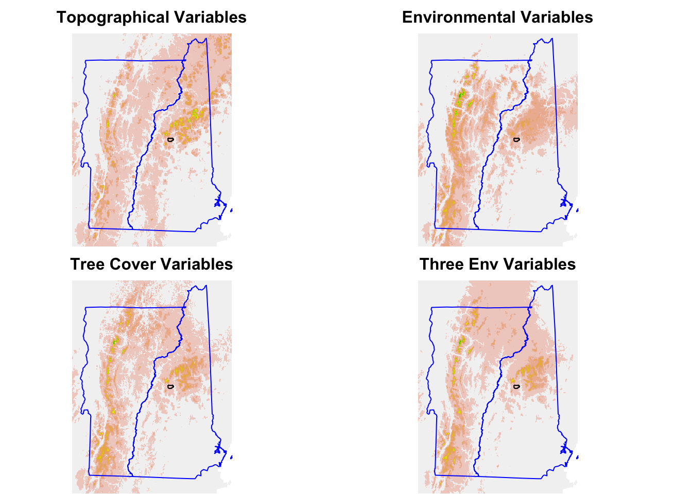
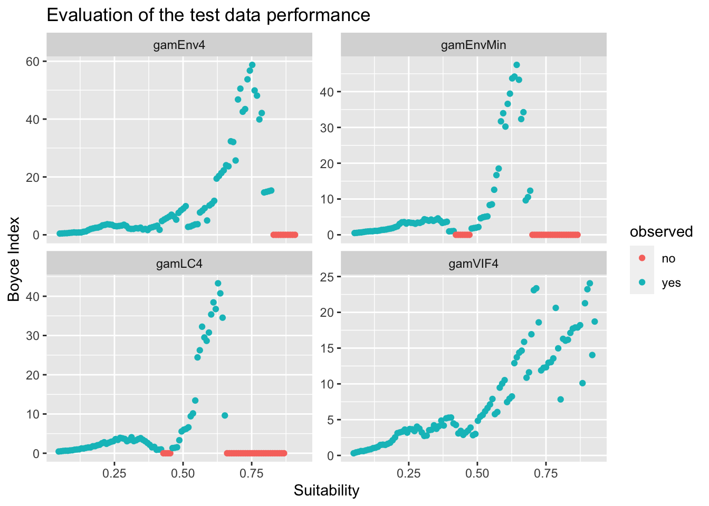
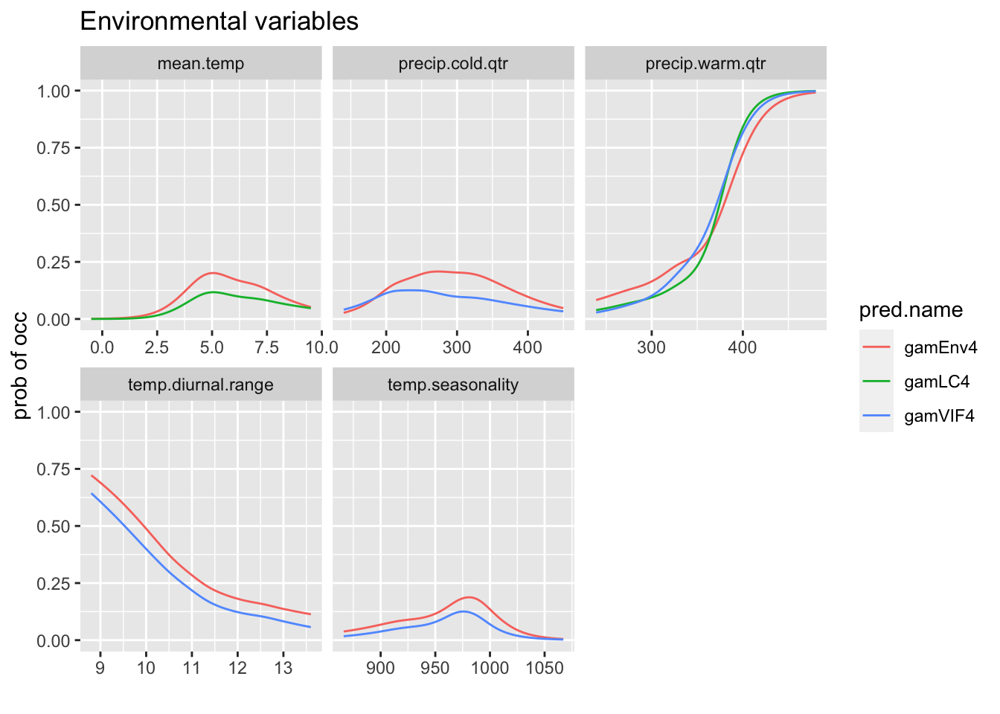

Chapter 9 SDMs – GAM
A generalized additive model (GAM) is similar to a linear regression model except that the relationship between the response variable and explanatory variables is flexible. For example,
\[y = \alpha + s_1(x_1) + s_2(x_2) + \epsilon\] where \(s()\) is a function. The code for fitting the GAMs will be similar in structure to the code for fitting the GLMs and the same evaluation metrics can be calculated.
9.1 Set-up
This chapter will use the following libraries.
9.1.1 Load the data and GLM models
Load the shapefiles, Trillium data and variables raster stack created earlier.
# The VT, NH and HB outlines
load("data/shapefiles.RData")
# The original observation data lat/lon
load("data/trillium_presences.RData")
# All the data needed to fit the SDM The grid cells with
# presences and background grid cells w predictors The
# variables that I'll use for various models
load("data/sdm_data.RData")
# Raster of all predictors
allVars <- raster::brick("data/allVars.grd")Load the model list from the GLM chapter plus the pm.plot function.
9.2 Fit GAM
The GAM formula in R looks like response ~ s(var1, sm) + s(var2, sm). The s() is the spline function and allows the response to be non-linear. The second number, sm is the amount of smoothing and the default way you specify this is different for the gam::gam() function versus the mcgv::gam() function. Here I use gam::gam() and use the df argument (default). df=1 would be linear.
I will write a function to make my formula for the gam() call. That way I don’t have to make it manually.
gamfm <- function(x, df, f = NULL) {
if (length(f) != 0)
x <- x[x != f]
fm <- paste0("s(", x, ", ", df, ")", collapse = " + ")
if (length(f) != 0) {
ff <- paste0(f, collapse = " + ")
fm <- paste(fm, ff, sep = "+")
}
fm <- as.formula(paste("pa ~", fm))
return(fm)
}For the GAM model with less smoothing (df=2), the formula is
pa ~ s(mean.temp, 2) + s(temp.diurnal.range, 2) + s(temp.seasonality,
2) + s(precip.warm.qtr, 2) + s(precip.cold.qtr, 2)
<environment: 0x7fda3d918d50>Notice how the variables are in a s() function. That is the spline function.
Because I am specifying what variables to use in the model formula, I don’t need to subset the training data. I can just pass the whole data frame in.
For the more flexible model, I use
Save models.
mod <- paste0("gamEnv", c(2, 4))
desc <- paste0("GAM - Environmental variables df=", c(2, 4))
for (i in 1:2) {
pm <- predict(allVars, get(mod[i]), type = "response")
bindex <- ecospat::ecospat.boyce(pm, cbind(pres_test$lon,
pres_test$lat), PEplot = FALSE)
modellist[[mod[i]]] <- list(model = get(mod[i]), name = mod[i],
desc = desc[i], terms = envvars, bindex = bindex)
}Warning in if (class(obs) == "data.frame" | class(obs) == "matrix") {: the
condition has length > 1 and only the first element will be used
Warning in if (class(obs) == "data.frame" | class(obs) == "matrix") {: the
condition has length > 1 and only the first element will be usedWe can compute the same output and diagnostics as we did for GLMs.
9.2.1 Predictions
Let’s zoom in on Hubbard Brook.
xlims <- c(-71.9, -71.6)
ylims <- c(43.875, 44)
pm.plot(pm, main = "Environmental Variables", xlim = xlims, ylim = ylims,
scale.max = 0.5)
9.2.2 Response curves
This shows the relationship between the predictor variable and the probability of presence.
rp <- biomod2::response.plot2(models = c("gamEnv4", "gamEnv2"),
Data = traindat, show.variables = envvars, fixed.var.metric = "mean",
use.formal.names = TRUE)Warning in which.max(sum_level): NAs introduced by coercion
Since rp is a data frame in long form, we can also use ggplot to plot.
p <- ggplot(rp, aes(x = expl.val, y = pred.val, lty = pred.name)) +
geom_line() + ylab("prob of occ") + xlab("") + facet_wrap(~expl.name,
scales = "free_x") + ggtitle("Environmental variables")
p
9.2.3 AUC Curves

9.2.4 Boyce Index
predict(allVars, gamEnv4, type = "response")
ecospat::ecospat.boyce(pm, cbind(pres_test$lon, pres_test$lat))Warning in if (class(obs) == "data.frame" | class(obs) == "matrix") {: the
condition has length > 1 and only the first element will be used
9.2.5 Variable importance
This is a measure of how much each variable singly impacts the fit.
mean.temp temp.diurnal.range temp.seasonality precip.warm.qtr
0.161965 0.102880 0.360015 0.336038
precip.cold.qtr
0.158276 9.3 Effect size curves
Let’s look at the GAM effect size curves for the model with 5 environmental variables. The effect curves are non-linear.
po <- gam:::preplot.Gam(gamEnv4, terms = attr(terms(gamEnv4),
"term.labels"))
dfenv <- data.frame(x = NULL, y = NULL, se = NULL, variable = NULL)
for (i in names(po)) {
vname <- stringr::str_replace(i, "s[(]", "")
vname <- stringr::str_replace(vname, ", 4[)]", "")
a <- data.frame(x = po[[i]]$x, y = po[[i]]$y, se = po[[i]]$se.y,
variable = vname)
dfenv <- rbind(dfenv, a)
}
p <- ggplot(dfenv, aes(x = x, y = y)) + geom_line() + geom_ribbon(aes(ymin = y +
2 * se, ymax = y - 2 * se), col = "grey", alpha = 0.5) +
ylab("effect size")
p + facet_wrap(~variable, scales = "free")
9.4 More GAM fits
Now I repeat the model fitting code for the other sets of variables and store to my model list.
9.4.1 Topographical only model
gamTopo2 <- gam::gam(formula = gamfm(topovars, 2), data = traindat,
family = "binomial")
gamTopo4 <- gam::gam(formula = gamfm(topovars, 4), data = traindat,
family = "binomial")Save models.
mod <- paste0("gamTopo", c(2, 4))
desc <- paste0("GAM - Topo variables df=", c(2, 4))
for (i in 1:2) {
pm <- predict(allVars, get(mod[i]), type = "response")
bindex <- ecospat::ecospat.boyce(pm, cbind(pres_test$lon,
pres_test$lat), PEplot = FALSE)
modellist[[mod[i]]] <- list(model = get(mod[i]), name = mod[i],
desc = desc[i], terms = topovars, bindex = bindex)
}Warning in if (class(obs) == "data.frame" | class(obs) == "matrix") {: the
condition has length > 1 and only the first element will be used
Warning in if (class(obs) == "data.frame" | class(obs) == "matrix") {: the
condition has length > 1 and only the first element will be used9.4.2 Land cover model
gamLC2 <- gam::gam(formula = gamfm(lcvars, 2), data = traindat,
family = "binomial")
gamLC4 <- gam::gam(formula = gamfm(lcvars, 4), data = traindat,
family = "binomial")Save models.
mod <- paste0("gamLC", c(2, 4))
desc <- paste0("GAM - Tree Cover variables df=", c(2, 4))
for (i in 1:2) {
pm <- predict(allVars, get(mod[i]), type = "response")
bindex <- ecospat::ecospat.boyce(pm, cbind(pres_test$lon,
pres_test$lat), PEplot = FALSE)
modellist[[mod[i]]] <- list(model = get(mod[i]), name = mod[i],
desc = desc[i], terms = lcvars, bindex = bindex)
}Warning in if (class(obs) == "data.frame" | class(obs) == "matrix") {: the
condition has length > 1 and only the first element will be used
Warning in if (class(obs) == "data.frame" | class(obs) == "matrix") {: the
condition has length > 1 and only the first element will be used9.4.3 Minimal GAM Model
gamEnvMin <- gam::gam(formula = gamfm(minEnvVars, 4), data = traindat,
family = "binomial")
pm <- predict(allVars, gamEnvMin, type = "response")
bindex <- ecospat::ecospat.boyce(pm, cbind(pres_test$lon, pres_test$lat),
PEplot = FALSE)Warning in if (class(obs) == "data.frame" | class(obs) == "matrix") {: the
condition has length > 1 and only the first element will be used9.4.4 VIF Vars
gamVIF2 <- gam::gam(formula = gamfm(vifvars, 2), data = traindat,
family = "binomial")
gamVIF4 <- gam::gam(formula = gamfm(vifvars, 4), data = traindat,
family = "binomial")Save models.
mod <- paste0("gamVIF", c(2, 4))
desc <- paste0("GAM - VIF variables df=", c(2, 4))
for (i in 1:2) {
pm <- predict(allVars, get(mod[i]), type = "response")
bindex <- ecospat::ecospat.boyce(pm, cbind(pres_test$lon,
pres_test$lat), PEplot = FALSE)
modellist[[mod[i]]] <- list(model = get(mod[i]), name = mod[i],
desc = desc[i], terms = vifvars, bindex = bindex)
}Warning in if (class(obs) == "data.frame" | class(obs) == "matrix") {: the
condition has length > 1 and only the first element will be used
Warning in if (class(obs) == "data.frame" | class(obs) == "matrix") {: the
condition has length > 1 and only the first element will be used9.5 Model Comparison
9.5.1 Predictions
Compare the topo, LC and environmenal predictions.
pg.topo <- predict(allVars, gamTopo4, type = "response")
pg.env <- predict(allVars, gamEnv4, type = "response")
pg.lc <- predict(allVars, gamLC4, type = "response")
pg.min <- predict(allVars, gamEnvMin, type = "response")Now make the prediction plots.
par(mfrow = c(2, 2))
mar <- c(0, 0, 2, 0)
pm.plot(pg.topo, main = "Topographical Variables", legend = FALSE,
axes = FALSE, box = FALSE, mar = mar)
pm.plot(pg.env, main = "Environmental Variables", legend = FALSE,
axes = FALSE, box = FALSE, mar = mar)
pm.plot(pg.lc, main = "Tree Cover Variables", legend = FALSE,
axes = FALSE, box = FALSE, mar = mar)
pm.plot(pg.min, main = "Three Env Variables", legend = FALSE,
axes = FALSE, box = FALSE, mar = mar)
9.6 AUCs
aucs <- unlist(lapply(modellist, function(x) {
dismo::evaluate(pres_test, backg_test, model = x$model)@auc
}))
sort(aucs)glmMinEnv glmLC glmTopo glmEnv gamTopo2 gamEnvMin gamLC2 gamTopo4
0.6961157 0.7117438 0.7145455 0.7183471 0.7203802 0.7215950 0.7223140 0.7281488
gamLC4 glmStep glmVIF gamEnv2 gamEnv4 gamVIF2 gamVIF4
0.7331653 0.7425372 0.7430992 0.7521983 0.7664959 0.7701322 0.7897686 9.7 Boyce Index - Spearman
Let’s look at the Spearman correlations from the Boyce Index.
gamLC4 glmEnv gamTopo4 gamEnvMin glmTopo glmMinEnv gamTopo2 gamLC2
0.777 0.811 0.832 0.832 0.856 0.865 0.873 0.873
glmLC gamEnv4 gamVIF2 glmStep gamEnv2 gamVIF4 glmVIF
0.902 0.904 0.930 0.939 0.939 0.939 0.948 Compare some of the Boyce Index plots.
dfb <- data.frame(x = NULL, y = NULL, model = NULL)
for (i in c("gamEnv4", "gamLC4", "gamEnvMin", "gamVIF4")) {
bi <- modellist[[i]]$bindex
a <- data.frame(y = bi$F.ratio, x = bi$HS, model = i)
dfb <- rbind(dfb, a)
}
dfb$observed <- "yes"
dfb$observed[dfb$y == 0] <- "no"
p <- ggplot(dfb, aes(x = x, y = y)) + geom_point(aes(col = observed)) +
ylab("Boyce Index") + xlab("Suitability")
p + facet_wrap(~model, scales = "free_y") + ggtitle("Evaluation of the test data performance")
9.8 Hubbard Brook comparisons
Let’s zoom in on Hubbard Brook. The observations to the far right are next to the labs. The GLM makes the ridges (boundary) much higher in suitability than the lower elevation brook bottom (center). The model with tree cover also makes the ridge more suitable than the lower elevation.
par(mfrow = c(2, 2))
xlims <- c(-71.9, -71.6)
ylims <- c(43.875, 44)
mar <- c(0, 0, 3, 0)
for (i in c("gamEnvMin", "gamEnv4", "gamLC4", "gamTopo4")) {
pg <- predict(allVars, modellist[[i]]$model, type = "response")
pm.plot(pg, main = i, xlim = xlims, ylim = ylims, scale.max = 0.5,
box = FALSE, axes = FALSE, legend = FALSE, mar = mar)
}Tree composition in Hubbard Brook also tracks these environmental conditions it looks like.

9.8.1 Response curves
We can compare the response curves for models which have the same variables.
rp <- biomod2::response.plot2(models = c("gamEnv4", "gamLC4",
"gamVIF4"), Data = traindat, show.variables = envvars, fixed.var.metric = "mean",
plot = FALSE, use.formal.names = TRUE)Warning in which.max(sum_level): NAs introduced by coercionThe models don’have all the variables. I will put NAs if the model doesn’t have that variable.
rp$include <- apply(rp, 1, function(x) {
x[2] %in% modellist[[x[4]]]$terms
})
rp$pred.val[!rp$include] <- NAgg.rp <- ggplot(rp, aes(x = expl.val, y = pred.val, col = pred.name)) +
geom_line(na.rm = TRUE) + ylab("prob of occ") + xlab("") +
facet_wrap(~expl.name, scales = "free_x") + ggtitle("Environmental variables")
print(gg.rp)
9.9 Model comparison table (first data set)
Compare AICs, Spearman Correlation for the models with the first data set (in traindatlist).
df <- data.frame(name = unlist(lapply(modellist, function(x) {
x$name
})), Spearman = unlist(lapply(modellist, function(x) {
x$bindex$Spearman.cor
})), AUC = unlist(lapply(modellist, function(x) {
dismo::evaluate(pres_test, backg_test, model = x$model)@auc
})), AIC = unlist(lapply(modellist, function(x) {
AIC(x$model)
})))
df$delAIC <- df$AIC - min(df$AIC)
df <- df[order(df$AIC), ]
knitr::kable(df, row.names = FALSE)| name | Spearman | AUC | AIC | delAIC |
|---|---|---|---|---|
| gamVIF4 | 0.939 | 0.7897686 | 2512.852 | 0.00000 |
| gamVIF2 | 0.930 | 0.7701322 | 2552.164 | 39.31228 |
| gamEnv4 | 0.904 | 0.7664959 | 2579.006 | 66.15366 |
| gamEnv2 | 0.939 | 0.7521983 | 2633.808 | 120.95618 |
| glmStep | 0.939 | 0.7425372 | 2648.513 | 135.66075 |
| gamLC4 | 0.777 | 0.7331653 | 2650.557 | 137.70542 |
| glmVIF | 0.948 | 0.7430992 | 2656.807 | 143.95475 |
| gamLC2 | 0.873 | 0.7223140 | 2688.271 | 175.41892 |
| gamEnvMin | 0.832 | 0.7215950 | 2711.681 | 198.82886 |
| glmLC | 0.902 | 0.7117438 | 2720.935 | 208.08274 |
| gamTopo4 | 0.832 | 0.7281488 | 2739.883 | 227.03084 |
| glmEnv | 0.811 | 0.7183471 | 2749.253 | 236.40140 |
| gamTopo2 | 0.873 | 0.7203802 | 2758.860 | 246.00769 |
| glmTopo | 0.856 | 0.7145455 | 2775.568 | 262.71597 |
| glmMinEnv | 0.865 | 0.6961157 | 2780.547 | 267.69485 |